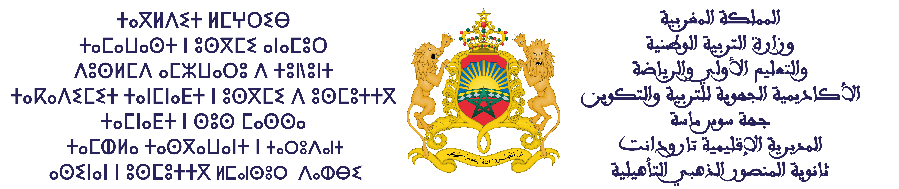

منـصة مَــدَار
فضاء الخدمات الإدارية والتربوية - ثانوية المنصور الذهبي
بوابة الرخص والتغيبات
التوثيق الرقمي للغيابات والتأخرات، وإرفاق التبريرات الخاصة بالتقرير اليومي للإدارة بطريقة سلسة ومباشرة.
بوابة المراقبة المستمرة
مسك وتخطيط تواريخ الفروض الكتابية لجميع الأقسام المسندة خلال الأسدوس في منصة مركزية واحدة.
التتبع البيداغوجي
البطاقة التقنية لتتبع تنفيذ البرنامج الدراسي وتوثيق إنجاز الدروس والفقرات بدقة واحترافية.